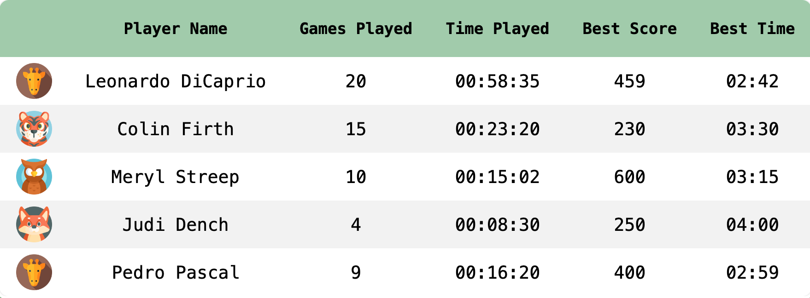
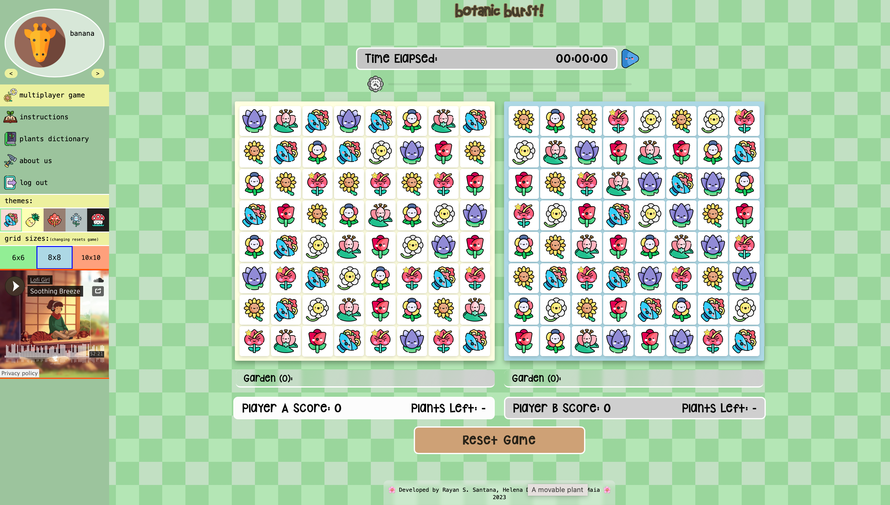

instructions
main goal
On Botanic Burst's Classic Mode you need to score 20 points in order to win the game!
if you combine 3 plants, you get 1 point,
if you combine 4 plants you get 2 points,
and so on!
While you are playing, the plants that you match are included in your personal garden,
so make sure to diversify your matches for colorful gardens!
With 3 different game modes and 5 themes (or so it seems) with 8 different plants each, you can have a total of 8! * 5, or 201,600, garden arrangements in Botanic Burst, do you think you can get all of them? 🙃
how to play
One move consists of moving a plant horizontally or vertically, as long as the moved piece allows to form a set of 3 or more equal pieces.
You win the game when you reach a score of 20. You lose the game if it becomes impossible to make a move, if this happens, you can restart the game using the reset game button.
points system
Every time you line up N plants, you score (N-3)+1 points.
Your player stats are stored on a score table, where you can find the number of games played, the total time played, the best score obtained, and the time of the game where the best result was achieved.
other game modes
⭐ These two game mode have special plants, which when eliminated allow you to get more points!
Some say that if a very skilled gardener is able to
grow 4 or more of these plants in their garden all at once,
the star mushroom will grant them a gift!
The star mushroom is also said to reward those who can make beautiful gardens from humble fields...
-
multiplayer mode
Botanic Burst can be played between 2 to 4 players, each one with their own game board. On this version, each player can alternately move a piece from their board, with a time limit for each move, so pay close attention to your game and do your best!
-
timed mode

⏳ On this mode you need to score the highest you can with a time limit - focus on the game and be as fast as you can!
curiosities about our inspiration - bejeweled
📢 It was released on March 30, 2001, by a company called PopCap Games.
👑 In 2020, it was added to the "World Video Game Hall of Fame", where other world-renowned electronic games can be found, such as Pacman, Tetris, Super Mario Kart or The Sims. To learn more about this topic, click here!
🎬 Here are some cool videos of Bejeweled: